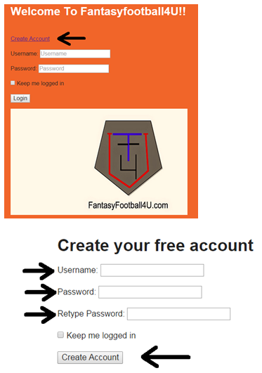
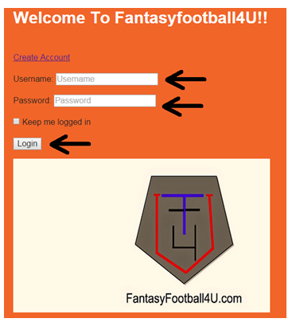
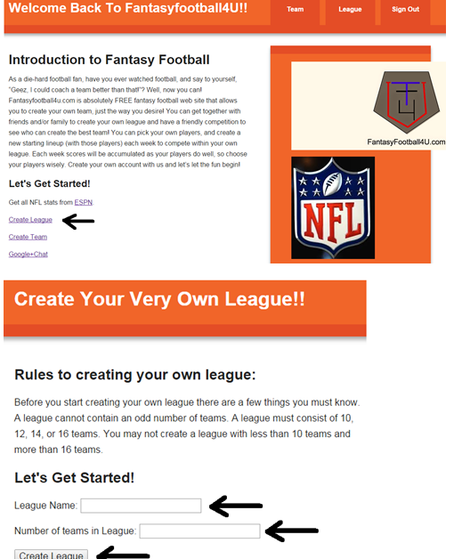
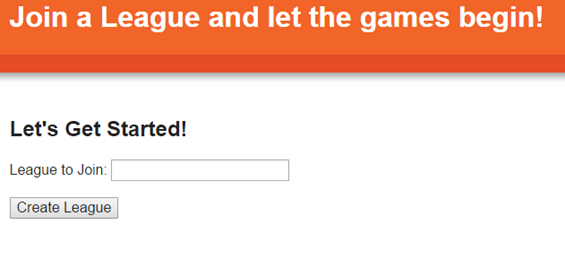
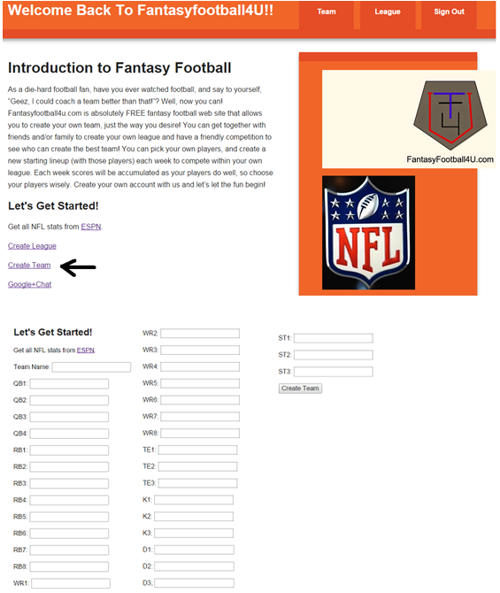
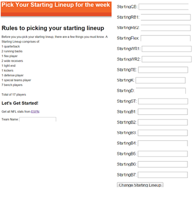
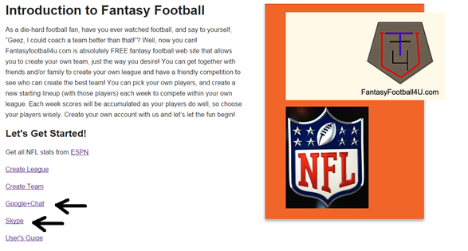
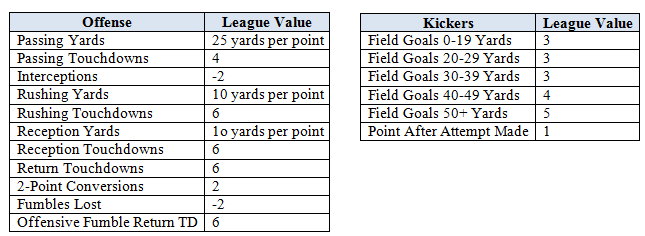
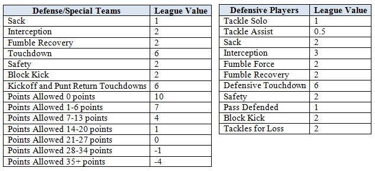

Minimum Web Browser Requirements
In order to view Fantasyfootball4u.com, you must have the following minimum web browser requirements:
- Google Chrome – Version 39.0 or higher
- Mozilla Firefox – Version 34.0 or higher
- Internet Explorer – Version 11 or higher
- Safari – Version 5 or higher
Installation
Fantasyfootball4u.com is a free web site for anyone to use and does not require any installations to use. However, you must have the minimum web browser requirements (as shown in the above section) and you must have Internet access to access this web site.
Operations
How to access Fantasyfootball4u.com
- Open browser of choice (ie,. Google Chrome, Internet Explorer)
- Enter fantasyfootball4u.com URL into the chosen browser
- Choose the desired action from the provided links
How to create an account
- Click on create account (from login page)
- Enter email address
- Type in password
- Re-type password
- Click Create Account

How to log in
- Access the fantasyfootball4u.com website
- Enter username
- Enter password
- Click Login

TIP:
* Password must be at least EIGHT characters long with at least one UPPER case letter, one lower case letter, one number, and one special character.
How to create a League
- Log into your account
- Click on Create League
- Enter desired league name
- Pick how many teams you want to in your league
- Type the email addresses of people whom you want to invite to join your league

How to join a league
- You should have received an email from us stated that someone wants you to join their league
- Click on the link that the email has provided
- If you have not yet created an account with fantasyfootball4u.com, please create an account (see How to create an account)
- Click on Join League
- Enter in the name of the League you wish to join
- If this is the money league, ensure that the due amount has been paid by one of the methods provided.

How to create a team
- Log in to your account
- Click on Team
- Click on Create Team
- Enter in the name you want your team to have
- Pick the desired players for your team
>>> Quarterback (up to 4)
>>> Running Back (up to 8)
>>> Wide Receiver (up to 8)
>>> Tight End (up to 3)
>>> Kicker (up to 3)
>>> Defense (up to 3)
>>> Special Team (up to 3)
- Click Create Team
- You have now successfully created your own personalized Team!

TIPS:
* Since we do not allow drafting, we advise that you pick the maximum number of allowed players for each position.
* When picking players for your team, we advise you to keep in mind each player’s bye week, this way all your players do not have the same bye week and you are able to have a full starting lineup each week
How to pick players for starting line up
- Log in to your account
- Click on My Team
- Click on Pick Starting Lineup
- Pick 1 Quarterback as prompted
- Pick 2 Running Backs as prompted
- Pick 1 flex player (this can be a running back, wide receiver, or tight end) as prompted
- Pick 2 Wide Receivers as prompted
- Pick 1 Tight End as prompted
- Pick 1 Special Teams or Defense player as prompted
- Pick 1 kicker as prompted
- Pick 7 Bench Players as prompted
- Save changes by clicking on Change Starting Lineup

TIPS:
* Games start on Thursday each week and end on the following Monday. We advise you to pick a fresh new starting line up each week. It would be smart to pick your starting lineup by Wednesday night, if you can.
* Make sure that you are up to date with all injuries, to avoid starting a player that cannot play due to an injury.
How to chat with members in your league
- Log in to your account
- Select either Google Hangouts or Skype and enter the username and password
- Choose the team members you want to chat with and send them an invite.

How to check your score
- Log into your account
- Click on Scores
Scores will be automatically calculated each week and will be determined based on our scoring tables:


Frequently Asked Questions
General
Q: Can I join more than one league?
A: Yes, you can join one or more leagues.
Q: What happens if a league member decides to not participate?
A: After a period of inactivity, the member’s team will be dropped from the league.
Account
Q: How do I unlock my an account?
A: After a period of 30 minutes, your account will reset and you will be required to enter a new password upon login.
Q: How do I reset my password if I forget it?
A: Click the Forgot Password link and enter the required information. You will have a choice of answering personal question or having an email sent to the email account on file with a link to reset your password.
Q: If I am in a money league, when are payments due?
A:Payment are due by the start day of the league. If payment is not received, you will be unable to participate in the league.
Web Site
Q: What if I can’t access the website?
A: Check to see if the minimum web browser requirements are met and check to see if you have internet access.
Q: What if the statistics are not update for the given week?
A: It is possible that stats may not be up to date when you check. Our website will update the stats weekly by Saturday night.